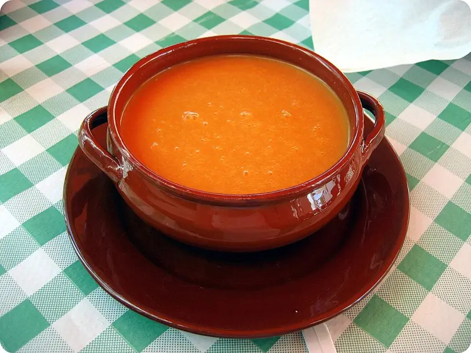

Фото: Bocadorada, CC BY-SA 2.0

Гаспачо
Холодный суп из свежих помидоров, огурца и перца
20 мин4 порц.185 ккал на порциюБ 4 · Ж 13 · У 14Средиземноморская кухня
Продукты на 4 порц.
- Помидоры8 шт
- Огурцы1 шт
- Перец болгарский1 шт
- Лук репчатый0,5 шт
- Чеснок1 зуб.
- Хлеб белый по желанию2 ломтика
- Оливковое масло3 ст. л.
- Уксус 9%1 ст. л.
- Соль1 ч. л.
- Перец чёрный молотый1 щеп.
- Вода0,5 стак.
Как готовить
- Помидоры надрежьте крестом, опустите в кипяток на 30 секунд, затем в холодную воду и снимите кожицу.
- Огурец очистите, у перца удалите семена. Овощи нарежьте крупно.
- Хлеб без корки замочите в воде на 5 минут.
- Сложите в блендер помидоры, огурец, перец, лук, чеснок и хлеб, взбейте до гладкости 2-3 минуты.
- Добавьте уксус, соль, перец и, продолжая взбивать, тонкой струйкой влейте оливковое масло.
- Охладите в холодильнике минимум 2 часа. Подавайте с кубиками огурца и перца.
Совет. Вкус зависит от помидоров: берите спелые мясистые. Уксус для гаспачо лучше винный или яблочный, 9 % столового кладите вдвое меньше.